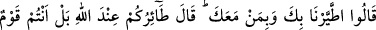
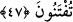
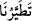
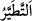
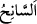
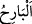
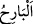
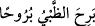

Çünkü azâb indiği zaman artık tevbenin kabûlüne imkan yoktur.
Cezâlandırılmadan önce af kapısını çal
Zira sopanın altında iken feryâd etmenin bir faydası yok
47. Şöyle dediler: “Senin ve beraberindekilerin yüzünden uğursuzluğa uğradık.”
Sâlih: “Size çöken uğursuzluk (sebebi), Allah katında (yazılı) dır. Hayır, siz
imtihâna çekilen bir kavimsiniz.” dedi.
“Şöyle dediler: “Senin ve beraberindekilerin” dininde seninle beraber olanların
“yüzünden uğursuzluğa uğradık.” Çünkü sıkıntılar birbiri ardına üzerimize geldi.
Onlar kuraklığa uğratılmış ve: “Bu musîbet, senin ve ashâbının uğursuzluğundan dolayı
başımıza geldi. Mûsâ (a.s.)’ın kavmi ona, Antakya halkı da peygamberlerine böyle
dediler.
“
”nin aslı, “
”dır. “
” uğursuzluk görmektir. Uğursuzluğun böyle ifâde
edilmesi şu sebeptendir: Araplar yolculuğa çıkınca, bir kuşa rastlarlarsa onu ürkütürler
eğer kuş soldan sağa uçarsa bunu uğurlu sayarlar, sağdan sola uçarsa bunu da
uğursuzluğa yorarlardı. Hayrı ve şerri kuşa nisbet ettiklerinden, bu ikisine sebep olan
Allah Teâlâ’nın kaderi ve taksimi veya kulun amelinden olan şeyler için kuş anlamına
gelen tayr, istiâre olarak kullanıldı.
Fethu’r-Rahmân ve el-Kevâşî’de der ki: “
” kuşu sağ tarafına çevirip onu
avlamaya imkan bulan ve bunu uğurlu sayan kimsedir. “
” kuşu sol tarafına çevirip
onu avlayamayan ve bunu uğursuzluğa yoran kimsedir. Sonra her uğursuz sayılan şey
için kullanılır olmuştur.”
el-Kâmûs’ta der ki: “
” avcının sağ tarafından zuhûr edip sol tarafına kaçan ava
denir. Ceylan sağ taraftan gelip sol tarafa gittiği zaman “
” denir.
Keşfü’l-esrâr’da der ki: “Arapların bazı vahşî hayvan ve kuşlar hakkındaki inancı
böyleydi. Bu hayvan bu tarafta değil öbür tarafta ötse, ses çıkarsa bu afet ve belâlara
işâret sayılırdı. Rasûlullah (s.a.) böyle bir itîkadı yasaklamış ve şöyle buyurmuştur:
“Kuşları yumurtalarının üzerinde/yuvalarında (kendi hallerine) bırakın.”[65] Çünkü
bu tür inançlar hakîkatı olmayan boş vehimlerdir.
İkrime (r.a.) der ki: “İbn Abbas (r.anhümâ)’nın yanındaydık. Bir kuş öterek
yanımızdan geçti. Oradakilerden bir adam: “Bu hayırdır/hayra işârettir.” dedi. Bunun
üzerine İbn Abbas (r.anhümâ) “Bu ne bir hayır ve ne de bir şerdir.” dedi.”
Hoşlanmadığın şeyi söyleme; olabilir ki;